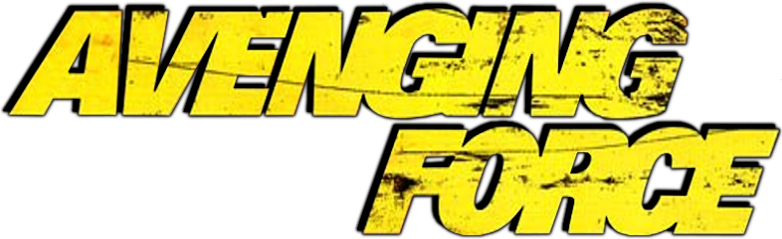

Det oberoende filmbolaget Cannon films kommer inte att gå till filmhistorien för sina nyanserade och finstämda filmer med djupa porträtt. Här är det raka och enkla berättelser med billiga specialeffekter och många karatesparkarsom gäller! De två israeliska kusinerna Menahem Golan och Yorum Globus vände upp och ner på Hollywood med sina lågbudgetfilmer under den blomstrande videoeran,och med actionstjärnor som Charles Bronson, Chuck Norris, Jean-Claude van Damme och Dolph Lundgren rullade pengarna in.Men storhetsvansinne fick kusinerna att göra några dåliga investeringar, och snart var guldådranett minne blott. Men B-filmerna de skapade lever fortfarande kvar i många entusiasters minnen och filmhyllor.

David Gardner, en pojke i en amerikansk småstad, får se ett UFO som landar.
Inkräktarna från Mars tar gradvis över stadens invånare. Den enda som lyssnar p Davids varningar är hans
skolsyster och dessa två får ensamma kämpa mot de onda rymdvarelserna. USAs försvar ser dock till att
slutstriden blir jämn.
Visa filmTrailer
Alaska. Två fångar, Manny och Buck, rymmer från fängelset i Stonehaven.
De jagas av fängelsets vaktchef, Ranken, som snart är dem på spåren. Rymlingarna stjäl ett lokomotiv
på en rangerbangård och får ofrivilligt sällskap av en kvinnlig järnvägsarbetare, Sara. Under färden
förstörs lokomotivets bromsar och det rusar med allt högre fart mot katastrofen . . .
Visa film
Överste James Braddock följer med en amerikansk delegation till Vietnam för att undersöka om några krigsfångar fortfarande hålls fångna. Den vietnamesiska militären förnekar detta, så Braddock beslutar att på egen hand undersöka saken. Han finner ett antal fångar och lyckas befria dem.
Matt Hunter åker till New Orleans för att träffa sin gamle kompis Larry Richards (Steve James) från militären. Att Larry, som är afroamerikan, kampanjar i det lokala senatorvalet upprör en grupp högerextremister, som förgäves försöker få honom att hoppa av valet. När hotfulla telefonsamtal inte räcker attackerar gruppen med våld. Tyvärr för dem har Matt Hunter, "the avenging force", precis kommit till stan.